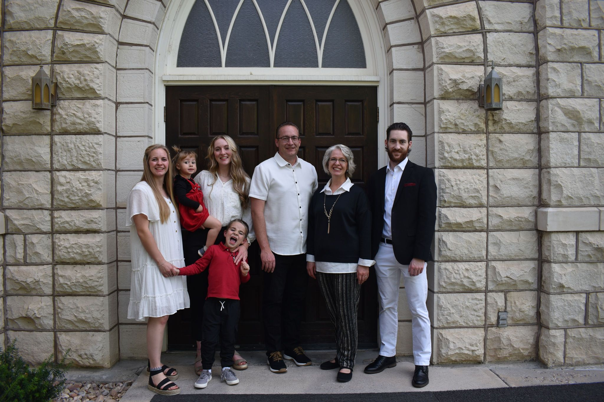

About Me
My name is Abby, I love rainstorms, brownies, plants - especially the low maintainence ones, and people. . .even though I don't seem like it. I'm working on getting my master's degree in social work, learning web development, dancing for fun, and raising two little toddlers as a single mom. I work as a youth mentor for teenagers.
I spend my free time with my two toddlers going on various adventures and taking great joy in watching their childhood. I also do freelance work as a website developer, weight lift regularly, and try to keep a good balance between a vibrant work and social life.
Skills
- Learning Korean
- 1.5 years of practice
- Working towards taking TOPIK 1 (Korean literacy test)
- TTMIK Textbooks
- TOPIK Study Course
- Music, Podcasts, Shows
- Currently working on master's in Social Work
- Aiming towards becoming a Licensed Clinical Social Worker
- Certifications
- CPR
- CERT
- Family Instructor
- Basic Coding/Web Development Skills
- Tech-Mom
- Clay Art as a Hobby
Dancing
On the weekends I don't have my kiddos, I spend time catching up on school, coding, and dancing!
I've danced since I was 13 years old. I did ballroom through high school, a little ballet in college, and started going to swing a year ago. It's something I always wanted to try when I was younger but was too shy, so I am really proud to be considered "regulars" at our swing place now!